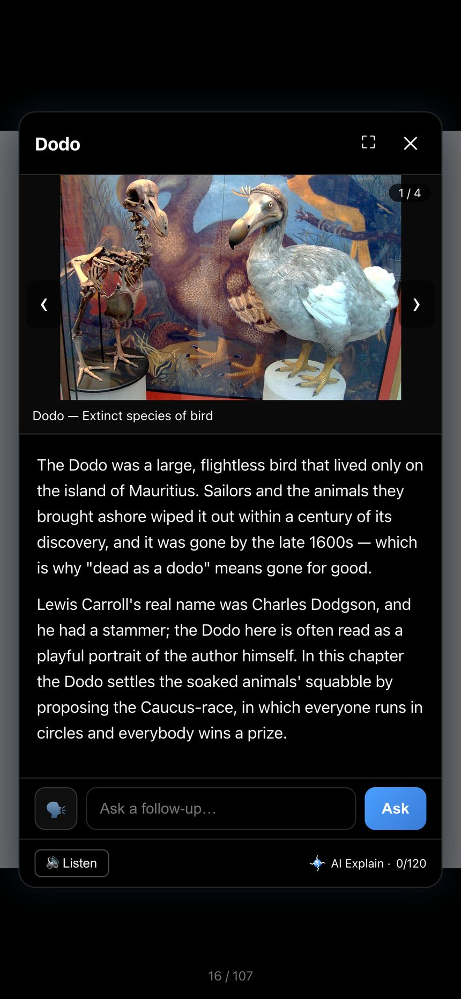
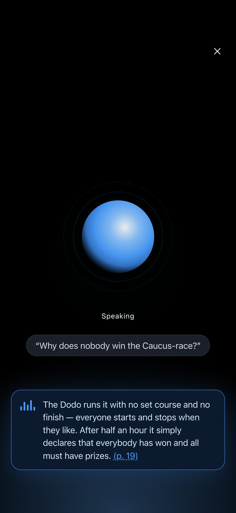
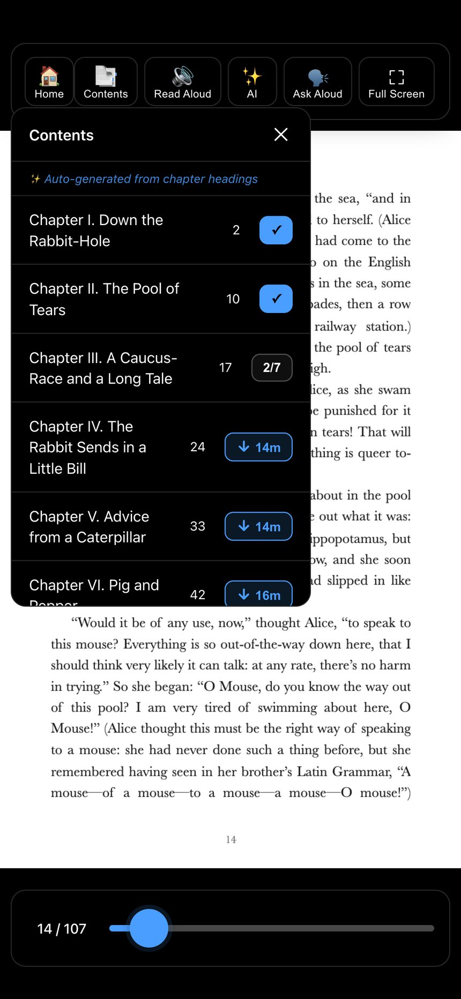

9:41
Your eyes are done. The reading isn't.
Read aloud, follow along.
A natural voice reads your PDF or EPUB while a dot follows the words. It skips headers and page numbers, so it sounds like a book, not a robot reading a scan.
8 voices · speed from 0.75× to 2×

9:41
One paragraph loses you.
Explain anything.
Highlight the part that lost you and tap Explain. The answer uses the actual text of your document, not a chatbot's guess. It can see the picture on the page too.
9:41
Stuck on a word?
Tap a word. Keep it.
Get the definition in any language and hear it said out loud. Save it to My Words, along with the book it came from.

9:41
Hands full?
Just ask out loud.
Tap once and ask about your book. Flippy answers out loud, from the book you're reading.

9:41
Long commute, no signal.
Listen offline.
Download any chapter, or any range of pages, as audio. It plays with no signal, like a podcast.
New in Flippy 4.8
- Share a quote: select a few words, share them as a card
- Share a page as a picture
- Reading stats: your streak, pages and books
- EPUBs look like books, cover first
- Pick up where you stopped on your other device
- Flippy for Mac, made for the computer
Also in Flippy
- EPUBs, with every feature
- Scanned PDFs, recognized on your phone
- Ask your whole library and get the page it came from
- Flashcards and quizzes from what you're reading
- Automatic chapters when the PDF has none
- 17 app languages, right-to-left included
- Highlights, notes and bookmarks
- Free sync. Your files are never uploaded
- Read on any computer at flippypdf.com, with your notes synced
- Add a PDF from any link
- Two-page spreads on tablets
- Zoom that stays locked while you flip
- Scroll mode when you'd rather scroll